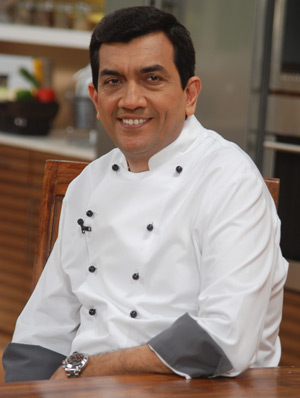
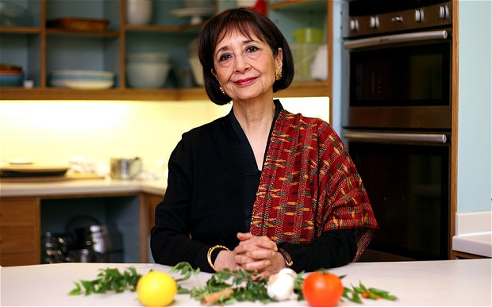

| Name of the Chef |
Image |
Awards and Recognition |
Exclusive Recipe |
| 1->Sanjeev Kapoor |
 |
- He is chosen as Indian ambassador for the United States.
- Sanjeev Kapoor is known as the Best Chef of India.
- Padma shri(2017)-fourth highest Indian national honour
- ITA Award(2010,2004,2002) -For Best cookery show ( Khana Khazana)
|
|
| 2->Vikas Khanna |
 |
- He won The Michelin star culinary expert competition.
- He is considered as the humble chef in the culinary field.
- He has additionally arranged a dinner for US President Barack Obama.
- In 2011, he was honored as Sexiest Man Alive by People Magazine.
|
|
| 3->Ranveer Brar |
 |
- Honorary member at the James Beard Foundation.
- Received recognition for his contribution to various cuisines
by several institutions such as AIWF, AICA, as also the Mayor of Boston.
- Awarded 'Indian of the Year' for Chef and TV Host of the year 2017
- First Indian Brand Ambassador for Italy's Bertolli Olive oil
|
|
| 4->Madhur Jaffrey |
 |
- Taraknath Das Foundation Award in 1993.
- Muse Award presented by New York Women in Film & Television in 2000.
- Honorary CBE awarded on 11 October 2004 in recognition of her services to cultural relations between UK,USA and INDIA.
|
|
| 5->Anjum Anand |
|
- She is considered at fifth position among top 10 chefs in India.
- She went to a cooking school in Trivandrum
she worked day night to get recognition as top ten chefs in India.
|
|